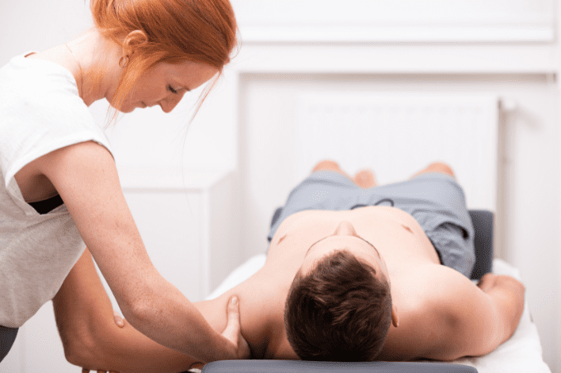

Kinésithérapie
Que fait un kinésithérapeute?
La kinésithérapie vise à rétablir les problèmes de mouvement en utilisant des techniques manuelles et de la thérapie par l'exercice pour une récupération physique rapide. L'objectif est d'améliorer la qualité de vie en augmentant la mobilité, en réduisant la douleur et en favorisant la guérison. Nous commençons par une première prise de contact et un examen physique afin de créer un plan de traitement ensemble. La participation active du patient est cruciale pour le succès à long terme.


Pourquoi peut-on consulter un kinésithérapeute?
- Lésions tendineuses et lésions de surutilisation (p. ex., tendon d'Achille, tendon rotulien, fasciite plantaire)
- Déchirures musculaires (p. ex., muscles du mollet, ischio-jambiers, quadriceps)
- Entorses ou lésions ligamentaires (p. ex., entorse de la cheville)
- Fractures (p. ex., fracture du poignet)
- Problèmes du genou (p. ex., problèmes de ménisque)
- Problèmes de l'épaule (p. ex., épaule gelée, problèmes de la coiffe des rotateurs)
- Douleur et raideur liées à l'arthrose et aux affections rhumatismales
- Prévention
- Rééducation de la marche
- Prévention des chutes chez les personnes âgées